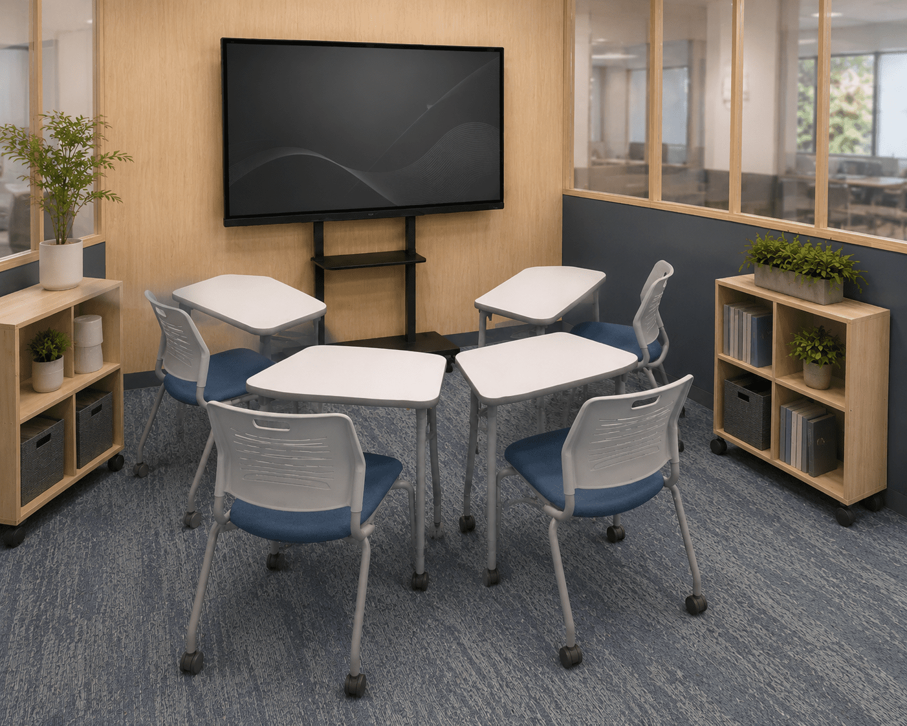
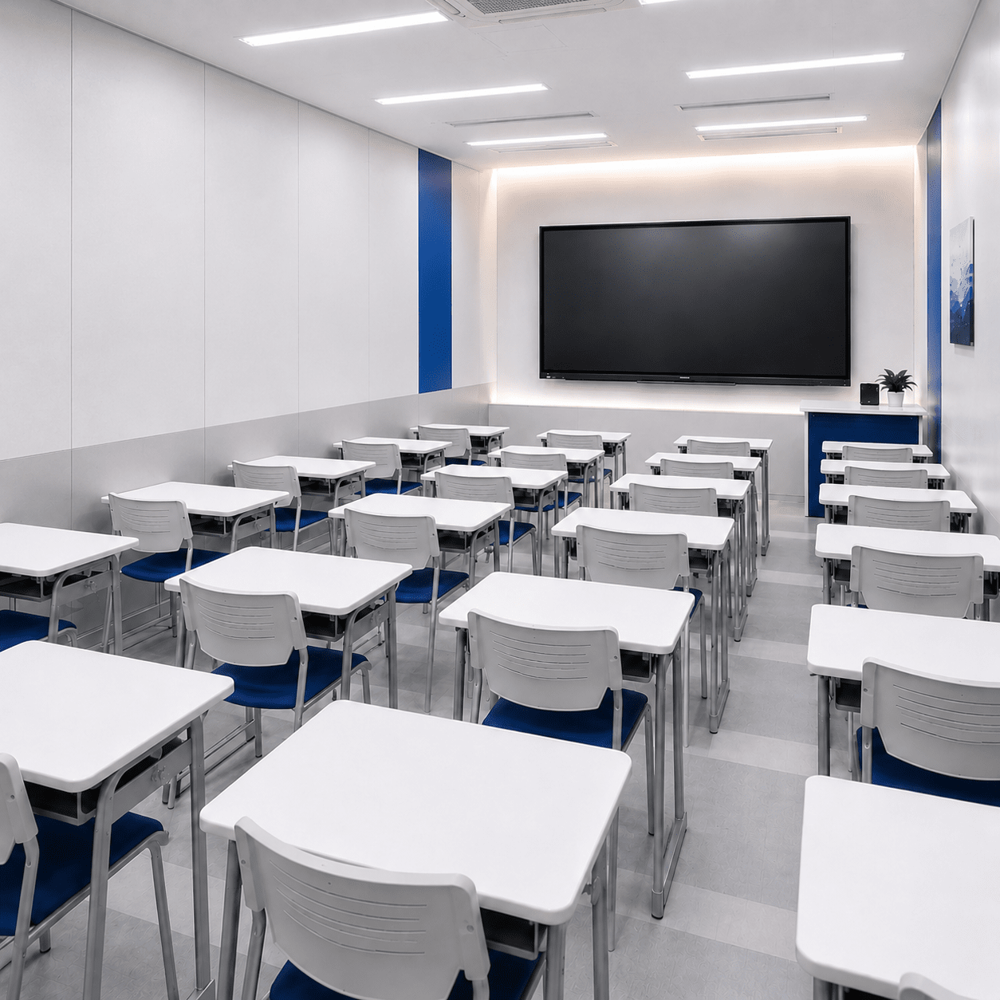
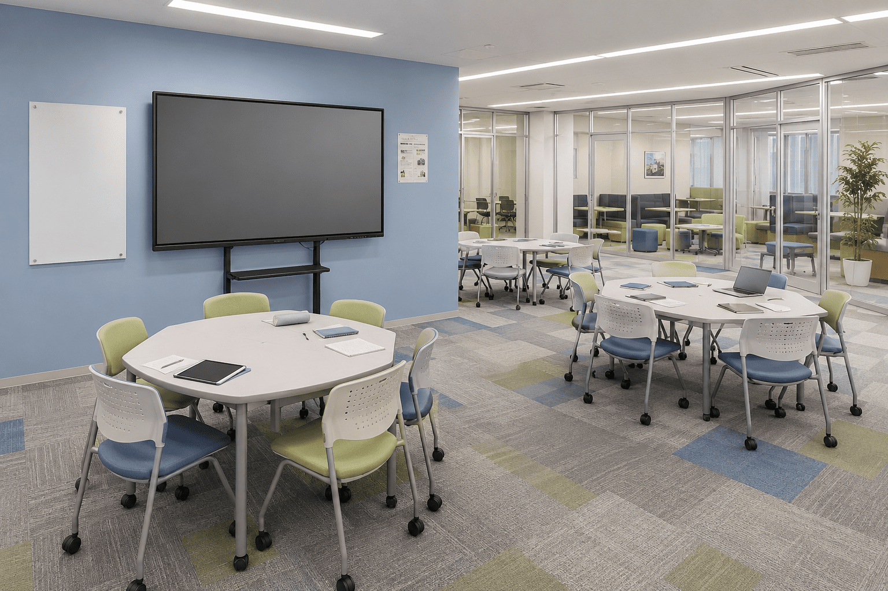

2020年から、授業で実践
教材の見せ方、書き込み、保存まで。日々の授業で使う視点からご案内します。
学校・学習塾の先生と、教室をつくる方へ
比べるところから、
授業で使いこなすところまで。
機種選びから予算、導入後の使い方まで。Kokuban BASEは教育現場に特化した相談窓口として、先生の「どうしたらいい？」を一緒に考えます。
まだ導入するか決まっていなくても、大丈夫です。

なぜ、教育現場に特化しているのか。
運営会社の株式会社idea spotは、会員制難関受験専門塾エリオを運営しています。2020年から自分たちの教室で電子黒板を使い続けてきたからこそ、カタログだけでは分からない授業の悩みも、一緒に考えられます。
相談を支える講師・運営メンバーを見る →
教材の見せ方、書き込み、保存まで。日々の授業で使う視点からご案内します。
書き心地や操作、教室の見え方など、先生が気になる違いを一緒に確認します。
教え方も教材も教室ごとに違うから。機種選びと授業での活用をつなげて考えます。
Kokuban BASEの提供価値
メーカーに相談すると、聞けるのはその1社の製品の話です。Kokuban BASEなら、複数ブランドの実機を使い比べてきた講師に、違いや向き不向きをまとめて相談できます。
教育現場で電子黒板を使いこなす講師が、あなたの教育機関に合うブランドを選びます。
サイズや機能の選びすぎ・足りなさを、教室の広さと授業での使い方から見極めます。
どの授業で、誰が、どう使うかをヒアリングしたうえで、合う機材をご用意します。
実機を並べて、書き心地や画面の見え方をその場で比べられます。ショールームを見る ↓
まずは、今のお悩みから
教室の広さ、教材、予算、使いたい授業を伺い、検討の順番から一緒に整理します。
Kokuban BASEは、機器を納めて終わりにはしません。教室の目的に合わせた使い方までご提案し、導入が成果や付加価値につながるよう伴走します。以下は、相談内容をイメージしやすくするための一例です。実際のご提案内容や効果は、教室の規模・運営方針・ご利用環境に合わせて個別にご案内します。

少人数指導の運営を見直したい場合
たとえば個別指導塾で55インチモデルを活用し、1対4〜6の少人数制クラスを検討するケースでは、授業の見せ方や座席配置まで含めてご相談いただけます。

上位クラスの授業価値を高めたい場合
たとえば最難関クラスで電子黒板を活用するケースでは、資料提示・板書・映像教材を組み合わせた見せ方など、講座の魅力が伝わりやすい運用を一緒に考えます。

共有スペースをもっと活用したい場合
たとえばラーニングコモンズや多目的教室で使うケースでは、グループワークや発表、探究学習での使い方まで想定しながら、設置場所や活用方法をご提案します。